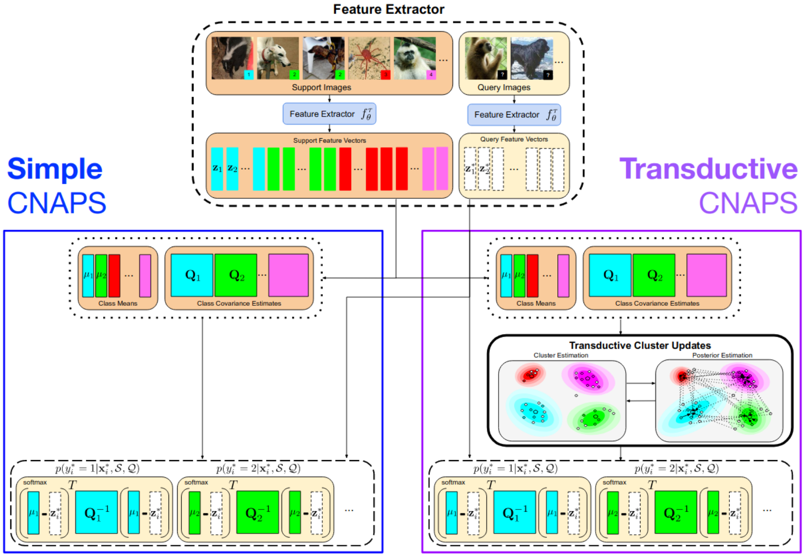
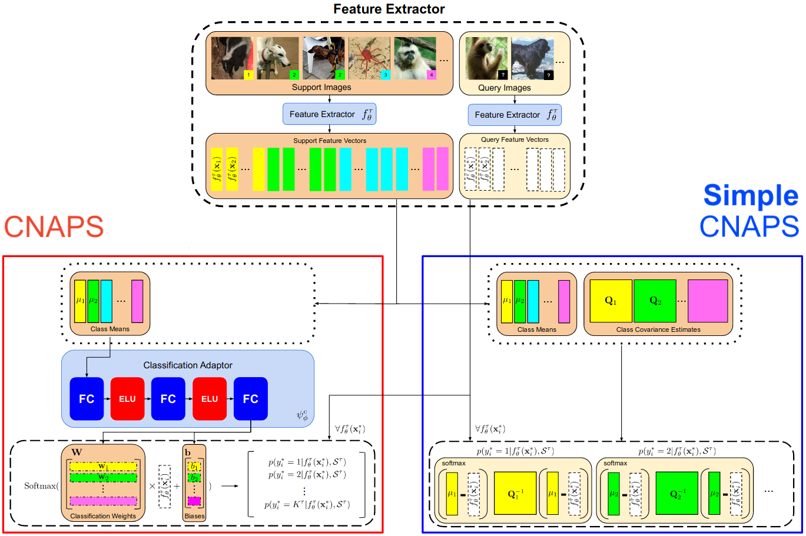

|
Research / Publications
I'm broadly interested in developing methods that allow for intelligent reasoning within the visual space. My past research has been primarily focused on few-shot and semi-supervised learning of
object classifiers and detectors. Recently, I've begun work on other problems in computer vision such as multi-object tracking/modelling, learnable data augmentation methods, and transfer learning.
|
|

|
Improving Few-Shot Visual Classification with Unlabelled Examples
Peyman Bateni*,
Jarred Barber*,
Jan-Willem van de Meent,
Frank Wood
Pre-Print, currently under review
ArXiv
|
|
|
Neural RST-based Evaluation of Discourse Coherence
Grigorii Guz*,
Peyman Bateni*,
Darius Muglich,
Giuseppe Carenini
Conference of the Asia-Pacific Chapter of the Association for Computational Linguistics (AACL) and the International Joint Conference on Natural Language Processing (IJCNLP), 2020
ArXiv /
Code /
Video
|
|

|
Improved Few-Shot Visual Classification
Peyman Bateni,
Raghav Goyal,
Vaden Masrani,
Frank Wood,
Leonid Sigal
IEEE/CVF Conference on Computer Vision and Pattern Recognition (CVPR), 2020
(A short-form version of this paper was also accepted at the Visual Learning with Limited Labels Workshop at CVPR 2020)
Paper /
ArXiv /
Code /
Video
|
|
{kind=link}